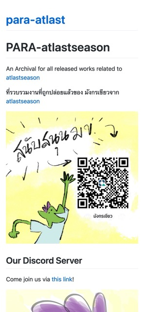
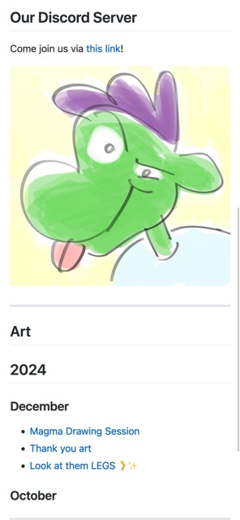

First Blog from scratch


After reading, watching and experimenting a lot about how to create blog using basic tools like markdown and github, I have finally arrived on my own ways to create my own blog and the repositories for my published artworks.
This could help me a lot for backup all my published work into an easy to find place with minimal crawling into media tabs or albums.
I will be listing how I’ve done it in the next post.
It’s been a long day for me today.
See you next blog!
Tags: